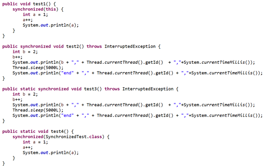
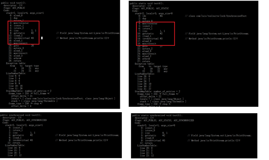

Java中的锁机制
说起Java中的并发，有一个永恒的话题就是锁机制，而提及Java中的锁，我们一般认为有两种形式，
- 通过synchronized关键字的实现
- 通过Lock接口的实现
网上关于两种方式的对比已经比较详尽，从使用角度来看synchronized关键字方式属于自动档，只需一条指令加锁释放全搞定，而Lock接口实现的锁则相当于手动挡，需要关注加锁、锁中断和解锁的一系列细节，搞不好就得熄火。特别是在JDK1.6对于synchronized关键字做了大量的优化后，已经做到大部分业务都够用了，所以废话不在多，今天的主题：自动档synchronized发车！
同步对象
通过synchronized关键字修饰的部分我们一般称之为同步块，而同步块的实现是对于同步块指定一个唯一访问的对象。在实现过程中我们会涉及两类同步对象，四种同步代码实现方式。
实例对象同步
实例对象同步是指同步块的唯一访问对象是一个实例对象，实例对象同步的时候会尝试获取实例对象的monitor，这种时候需要注意的是不同线程如果同步的是同一个类的不同实例，是起不到对象同步的作用的。代码如下：
1 | Runnable test1 = new SynchronizedTest(); |
实例对象同步我们又分为两种形式，
- 实例方法的synchronized关键字
- 实例方法中的synchronized代码块
类对象同步
类对象同步是指同步块的唯一访问对象是一个类对象，类对象同步的时候会尝试获取类对象的monitor。所以在类对象同步的时候我们可能面临过度锁的问题，即类对象中的同步块被线程锁定导致所有类实例都无法被其他线程访问。
类对象同步我们有两种代码实现方式，
- 静态方法的synchronized关键字
- 静态方法中的synchronized代码块
底层实现
我们知道synchronized关键字主要是通过JVM层面进行实现，而这时候来看一下JVM的字节码就是一个很有（显）必（逼）要（格）的事情了。针对上面提到的四种代码实现方式，我们简单撸一段代码：
然后使用javac先编译成class文件再使用javap来查看字节码。
通过字节码的结果比对我们发现，通过synchronized关键字修饰的同步块都在字节码中以monitorenter和monitorexit的指令形式体现了出来，而通过关键字修饰的方法都没有体现。
难道是加在方法上的关键字不起作用？我们可以反过来想一下，如果针对这两种情况加monitorenter和monitorexit指令我们是加在哪里呢？方法的开头和结尾，那么直接给这个方法加一个标记每次进入这个方法的时候通过标记去获取锁离开的时候再通过标记去释放不就行了吗。所以我们在方法定义下面看到了一行flag，而其中有一个ACC_SYNCHRONIZED正是起到了这个同步标记的作用。
总结起来，synchronized关键字的底层实现分成显式的指令实现和隐式的标记实现。显式实现主要针对同步块，通过将同步块代码包含在monitorenter和monitorexit指令中实现代码块的同步访问。关于monitorenter和monitorexit的实现原理，摘抄官方说明如下：
monitorenter
Each object is associated with a monitor. A monitor is locked if and only if it has an owner. The thread that executes monitorenter attempts to gain ownership of the monitor associated with objectref, as follows:
• If the entry count of the monitor associated with objectref is zero, the thread enters the monitor and sets its entry count to one. The thread is then the owner of the monitor.
• If the thread already owns the monitor associated with objectref, it reenters the monitor, incrementing its entry count.
• If another thread already owns the monitor associated with objectref, the thread blocks until the monitor’s entry count is zero, then tries again to gain ownership.
monitorexit
The thread that executes monitorexit must be the owner of the monitor associated with the instance referenced by objectref.
The thread decrements the entry count of the monitor associated with objectref. If as a result the value of the entry count is zero, the thread exits the monitor and is no longer its owner. Other threads that are blocking to enter the monitor are allowed to attempt to do so.
隐式实现主要针对同步方法，字节码层面通过ACC_SYNCHRONIZED标志位实现。当方法调用时，调用指令将会检查方法的 ACC_SYNCHRONIZED 访问标志是否被设置。如果设置了，执行线程将先获取monitor，获取成功之后才能执行方法体，方法执行完后再释放monitor。关于monitor的获取释放规则和指令级别的实现一致。
性能优化
在synchronized关键字刚刚出现的时候，往往会成为我们性能调优的常客，甚至很多代码规范中明确指出尽可能的避免使用synchronized关键字来实现代码同步。终于在JDK1.6的时候，官方爸爸出手了，优化点包含：
引入适应性自旋锁
在传统锁实现中，如果线程获取锁失败则进入阻塞，CPU进行状态切换，而往往状态切换的代价是很大的。为了解决这个问题，自旋应运而生，简单来说就是通过不停的尝试直到获取到锁。当等待的任务执行时间较长时，无限制的自旋会浪费CPU时间，一般会给自旋加一个固定的次数限制。适应性自旋则更进一步，由前一次在同一个锁上的自旋时间和锁的拥有者的状态共同决定自旋的次数，如果前一次自旋成功并且当前拥有者正常运行则允许当前自旋占用较多的CPU时间来进行自旋，如果在当前锁上的自旋极少成功则分配较少的自旋次数避免资源浪费。
通过逃逸分析的锁消除
主要是指JIT对于不存在同步访问的同步块进行锁消除操作，具体来说就是在字节码转机器码阶段忽略掉不必要的monitorenter和monitorexit指令。
锁粗化
JIT在进行动态编译的阶段，如果发现前后两个同步块对同一个对象进行加锁，则将锁粗化成一个，避免了反复获取释放锁的开销。
通过锁分级引入偏向锁和轻量锁
锁分级的理念是基于锁的应用场景进行了细分，研究发现在实际应用中大部分的同步场景都出现在无竞争状态，小部分出现在存在少量竞争的场景，还有小部分是存在大量竞争的场景。
针对无竞争场景，提出了偏向锁，通过在对象头中存储偏向的线程ID，下次再进入的时候就可以无代价获取到锁。
针对低竞争场景，推出了轻量锁，通过CAS操作来尝试替换对象头中的线程指向，如果多次自旋失败表明跳出了低竞争场景则进行锁膨胀，升级为重量级锁。
其他特性
可重入性
所谓的可重入性，在锁机制的上下文中我们可以理解为如果一个线程获取了对象的锁之后多次访问对象的同步块都不会发生阻塞。通俗来讲可以理解为，我们获取了一个大房子（对象）的钥匙，那么以后想进哪间房间（同步块）就进哪间房间。
提到可重入性，比较迷惑的是JUC中的ReentrantLock，让人觉得如果要实现锁的可重入性必须使用这个类，事实上synchronized实现的锁默认也是可重入的。
公平性
锁的公平性是指获取锁的顺序严格的按照线程加锁请求到达的顺序，即满足先到先得原则。在Java中synchronized实现的锁是非公平的，而Lock接口的实现中如ReentrantLock中的锁也是默认非公平的。不同点在于synchronized无法实现公平锁，而ReentrantLock可以通过传入参数指定使用公平锁或者非公平锁：
1 | public ReentrantLock(boolean fair) { |
典型应用
这里主要看一下synchronized在ConcurrentHashMap中的应用。
在JDK1.8中对于ConcurrentHashMap有一项很重要的变更是取消了Segment的使用，取而代之的是使用Node数组结合synchronized的方式对单条记录进行加锁来进一步提高数据结构的并发性。
1 | V oldVal = null; |
由于Segment是基于ReentrantLock实现的，我们不妨发散一下将这次升级解读成：
- synchronized的优化到1.8版本已经经过足够的验证可以出现在基础数据结构中
- 在锁的使用上官方推荐synchronized的方式，后续应该还有持续发力
总结
在这篇文章中，我们从使用方式和底层实现两个方面出发全面认识了Java中的加锁方式synchronized关键字。特别是经过JDK1.6的脱胎换骨，现在的synchronized关键字已经成为了更多并发实现的首选。通过对锁机制的一般特性如重入性和公平性的理解，我们不难发现不管是synchronized方式还是Lock方式，实现思想上都是一脉相承的。而之所以并存的原因大概也是为了可以通过多种选择的提供达到相互促进的目的吧。